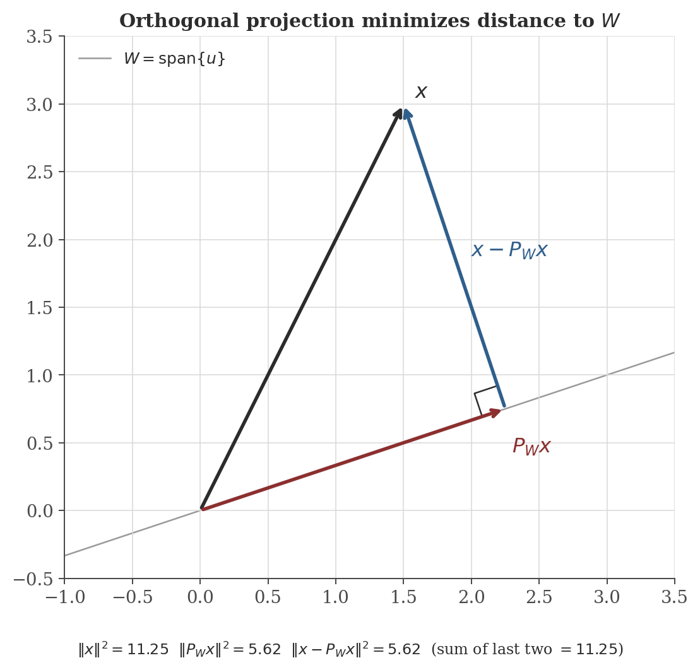
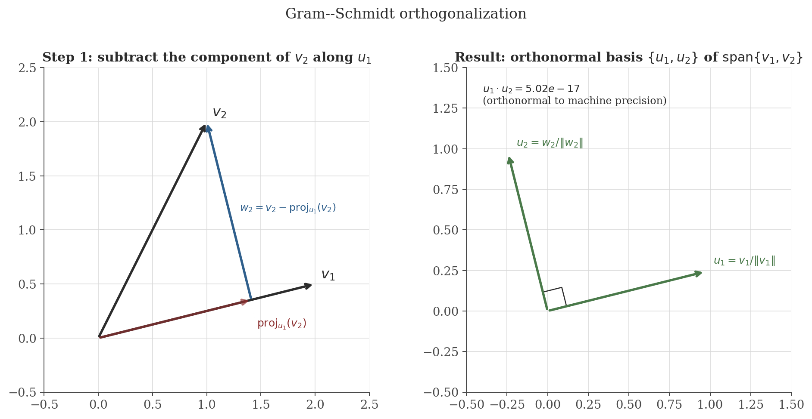

Vector Spaces
Disclaimer: These are my personal notes compiled for my own reference and learning. They may contain errors, incomplete information, or personal interpretations. While I strive for accuracy, these notes are not peer-reviewed and should not be considered authoritative sources. Please consult official textbooks, research papers, or other reliable sources for academic or professional purposes.
Contents
- Why abstract away from $\mathbb{R}^n$
- Vector spaces and subspaces
- Linear independence and span
- Basis, and why dimension is well-defined
- Linear maps and the rank–nullity theorem
- Inner products and Cauchy–Schwarz
- Orthogonal projection as best approximation
- Gram–Schmidt orthogonalization
- Computation
- Common pitfalls
- Connections
- References
1. Why abstract away from $\mathbb{R}^n$
Everything in matrices and eigenvalues was stated for $\mathbb{R}^n$, but nothing in the arguments actually used coordinates — only addition, scalar multiplication, and the axioms they satisfy. Polynomials of degree $\leq n$, continuous functions on $[a,b]$, and $m\times n$ matrices themselves all add and scale the same way $\mathbb{R}^n$ vectors do, without any natural list of coordinates. Formalizing exactly which properties of $\mathbb{R}^n$ were actually being used lets every theorem proved for $\mathbb{R}^n$ transfer immediately to these other settings — this is the entire payoff of the abstraction, not abstraction for its own sake.
2. Vector spaces and subspaces
A vector space over a field $\mathbb{F}$ (here always $\mathbb{R}$ or $\mathbb{C}$) is a set $V$ with an addition $V\times V\to V$ and scalar multiplication $\mathbb{F}\times V\to V$ satisfying the familiar axioms: addition is commutative and associative with an identity $0$ and inverses; scalar multiplication distributes over both vector and scalar addition, is associative ($a(bv)=(ab)v$), and $1v=v$.
Beyond $\mathbb{F}^n$: $\mathcal{P}_n$ (polynomials of degree $\leq n$), $C[a,b]$ (continuous real functions on $[a,b]$), and $\mathbb{R}^{m\times n}$ (Section 2 of the matrices note uses exactly this fact) are all vector spaces under pointwise/entrywise addition and scaling.
A subset $W\subseteq V$ is a subspace (itself a vector space under $V$'s operations) iff $0\in W$, and $W$ is closed under addition and scalar multiplication.
The remaining axioms (associativity, distributivity, etc.) hold automatically for $W$ because they already hold for all of $V$; only closure and containing $0$ are genuinely restrictive. This is why checking "is this a subspace" is a two- or three-line closure argument rather than re-verifying eight axioms from scratch — used throughout without comment whenever this note collection calls a set a subspace (e.g. eigenspaces in the eigenvalues note, which are kernels, and kernels are always subspaces by exactly this test: $0\in\ker A$, and $Av=0,Aw=0\Rightarrow A(cv+w)=cAv+Aw=0$).
3. Linear independence and span
$v_1,\ldots,v_k\in V$ are linearly independent if $\sum_i c_iv_i=0 \Rightarrow c_1=\cdots=c_k=0$. Their span is $\{\sum_i c_iv_i : c_i\in\mathbb{F}\}$, the smallest subspace containing them all.
Independence is exactly the condition under which every vector in the span has a unique representation as a combination of $v_1,\ldots,v_k$: if $\sum c_iv_i=\sum c_i'v_i$, subtracting gives $\sum(c_i-c_i')v_i=0$, which independence forces to $c_i=c_i'$ for all $i$. This is the property basis representations rely on in Section 4.
4. Basis, and why dimension is well-defined
A basis of $V$ is a linearly independent spanning set.
Calling $\dim V$ "the number of vectors in a basis" presupposes that this number does not depend on which basis you pick — a fact that needs proof, not just faith.
If $u_1,\ldots,u_m$ spans $V$ and $w_1,\ldots,w_k\in V$ are linearly independent, then $k\leq m$.
Any two bases of $V$ have the same number of elements.
This is the fact silently invoked every time a diagonalization argument counts eigenvectors against $n$ in the eigenvalues note, or a rank is called "the" dimension of a column space in the matrices note — dimension is only a meaningful invariant to compare across different bases because of this theorem.
5. Linear maps and the rank–nullity theorem
For a linear map $T:V\to W$ between finite-dimensional spaces, $\ker T = \{v: Tv=0\}$ and $\operatorname{im} T=\{Tv : v\in V\}$ are subspaces of $V$ and $W$ respectively (immediate from the subspace test of Section 2, exactly as for matrix kernels above).
$\dim\ker T + \dim\operatorname{im} T = \dim V$.
For $T$ represented by a matrix $A$, $\operatorname{im}T$ is the column space, so $\dim\operatorname{im}T=\operatorname{rank}(A)$ and $\dim\ker T$ is the nullity — this is the theorem underlying the rank/nullity claims used without proof in the matrices note's solvability criterion (Section 6 there).
6. Inner products and Cauchy–Schwarz
An inner product on a real vector space $V$ is $\langle\cdot,\cdot\rangle:V\times V\to\mathbb{R}$ that is symmetric, bilinear, and positive definite ($\langle v,v\rangle\geq0$, with equality iff $v=0$). It induces a norm $\|v\|=\sqrt{\langle v,v\rangle}$.
The dot product $x\cdot y=\sum_ix_iy_i$ on $\mathbb{R}^n$ is the standard example, but far from the only one: $\langle f,g\rangle=\int_a^bf(x)g(x)\,dx$ makes $C[a,b]$ an inner product space, and this is not a curiosity — it is exactly the structure underlying Fourier series (orthogonality of $\sin(nx),\cos(nx)$ under this inner product) and least-squares function approximation.
$|\langle x,y\rangle| \leq \|x\|\,\|y\|$, with equality iff $x,y$ are linearly dependent.
Cauchy–Schwarz is what makes $\cos\theta = \langle x,y\rangle/(\|x\|\|y\|)$ well-defined (the ratio is guaranteed to lie in $[-1,1]$) — the algebraic fact underneath the geometric notion of "angle" in any inner product space, not just $\mathbb{R}^2$ or $\mathbb{R}^3$.
7. Orthogonal projection as best approximation
Given a subspace $W\subseteq V$ and $x\in V$, which point of $W$ is closest to $x$?
If $u_1,\ldots,u_k$ is an orthonormal basis of $W$, the point of $W$ minimizing $\|x-w\|$ is $P_Wx = \sum_{i=1}^k\langle x,u_i\rangle u_i$, and the minimizing residual $x-P_Wx$ is orthogonal to all of $W$.
For $W=\operatorname{span}\{u\}$ one-dimensional, this reduces to the familiar $P_Wx = \dfrac{\langle x,u\rangle}{\langle u,u\rangle}u$ (no need for $u$ to be unit-length; the normalization is absorbed into the denominator).

8. Gram–Schmidt orthogonalization
The best-approximation formula above needs an orthonormal basis of $W$ to start from. Gram–Schmidt builds one from an arbitrary basis $v_1,\ldots,v_k$ by inductively subtracting off the projection onto everything already orthogonalized:
Correctness is an induction on $j$ using exactly Section 7's theorem: assuming $w_1,\ldots,w_{j-1}$ (equivalently $u_1,\ldots,u_{j-1}$) are already an orthogonal basis of $W_{j-1}=\operatorname{span}\{v_1,\ldots,v_{j-1}\}$, the sum being subtracted is precisely $P_{W_{j-1}}v_j$, so $w_j = v_j - P_{W_{j-1}}v_j$ is (by the best-approximation theorem's proof) orthogonal to all of $W_{j-1}$, and nonzero because $v_j\notin W_{j-1}$ (linear independence of the original basis).

9. Computation
The figures above are generated by vector-spaces/generate_figures.py. The snippet below verifies the rank–nullity theorem on a concrete linear map, and confirms Cauchy–Schwarz including its equality case.
import numpy as np
# Rank-nullity on a concrete linear map R^4 -> R^3
A = np.array([
[1.0, 2.0, -1.0, 0.0],
[2.0, 4.0, 0.0, 1.0],
[1.0, 2.0, 1.0, 1.0],
])
rank = np.linalg.matrix_rank(A)
n = A.shape[1]
nullity = n - rank
print(f"rank(A) = {rank}, nullity(A) = {nullity}, rank + nullity = {rank + nullity} (= n = {n})")
# Cauchy-Schwarz: strict for generic vectors, equality exactly when parallel
rng = np.random.default_rng(0)
x = rng.normal(size=5)
y = rng.normal(size=5)
print(f"generic: |<x,y>| = {abs(x @ y):.4f} <= ||x|| ||y|| = {np.linalg.norm(x)*np.linalg.norm(y):.4f}")
y_parallel = 3.0 * x
lhs = abs(x @ y_parallel)
rhs = np.linalg.norm(x) * np.linalg.norm(y_parallel)
print(f"parallel: |<x,y>| = {lhs:.4f} == ||x|| ||y|| = {rhs:.4f}")
Actual output:
rank(A) = 2, nullity(A) = 2, rank + nullity = 4 (= n = 4)
generic: |<x,y>| = 1.0838 <= ||x|| ||y|| = 1.8912
parallel: |<x,y>| = 2.2240 == ||x|| ||y|| = 2.2240Confirms the rank–nullity theorem numerically (this particular $A$ has two independent columns, so a $2$-dimensional kernel), and Cauchy–Schwarz both as a strict inequality for generic vectors and as an exact equality once $y$ is forced parallel to $x$ — exactly the equality condition proved in Section 6.
10. Common pitfalls
Spanning only requires enough vectors; a spanning set with redundant (dependent) vectors is not a basis, and "the dimension" is not "however many spanning vectors happen to be on hand" — it is the size of an independent spanning set, well-defined only by the theorem of Section 4.
Closed under addition alone, or under scalar multiplication alone, is not sufficient. The set $\{(x,y):xy\geq0\}\subset\mathbb{R}^2$ is closed under scalar multiplication by nonnegative scalars but not under addition ($(1,0)$ and $(0,-1)\cdot(-1)=(0,1)$... more simply, $(1,-1)+(-1,1)$ type combinations easily leave such cone-like sets); the standard cautionary example is any single quadrant union or cone that is not a full linear subspace.
Orthogonal only means pairwise perpendicular ($\langle u_i,u_j\rangle=0$ for $i\neq j$); orthonormal additionally requires unit length ($\langle u_i,u_i\rangle=1$). The clean projection formula $P_Wx=\sum_i\langle x,u_i\rangle u_i$ in Section 7 requires orthonormality specifically — for a merely orthogonal basis, each term needs the $\langle u_i,u_i\rangle$ normalization restored, exactly as in the one-dimensional formula noted after the theorem.
$C[a,b]$ has no finite basis, and the Steinitz exchange argument of Section 4 as stated is a finite-dimensional argument; infinite-dimensional vector spaces do have bases (Hamel bases), but proving this in general requires the axiom of choice, and such bases are typically unusable in practice (uncountable, non-constructive). Function spaces are instead usually handled through the orthonormal-sequence machinery of Section 8 (e.g. Fourier series) rather than through a Hamel basis — a genuinely different and more useful notion of "basis" in that setting, outside this note's scope.
11. Connections
- Matrices and eigenvalues. Column space, nullspace, rank, and eigenspaces are all subspaces in the sense of Section 2; the rank–nullity theorem proved here is what those notes' solvability and diagonalization arguments both quietly rely on.
- Regression (OLS). The fitted values $X\hat\beta$ in ordinary least squares are, by construction, the point of $\operatorname{col}(X)$ closest to $y$ in Euclidean norm — literally $P_{\operatorname{col}(X)}y$ in the notation of Section 7. The normal equations $X^\top(y-X\hat\beta)=0$ are exactly the orthogonality condition "$y-X\hat\beta \perp \operatorname{col}(X)$" from the best-approximation theorem, applied with $\langle\cdot,\cdot\rangle$ the standard dot product — OLS is orthogonal projection, not a separate idea that happens to look similar.
- Time series analysis. The partial autocorrelation function there is defined via "the best linear predictor of $X_t$ from $X_{t-1},\ldots,X_{t-h}$" — precisely $P_Wx$ of this note, with $W=\operatorname{span}\{X_{t-1},\ldots,X_{t-h}\}$ inside the (infinite-dimensional, but still inner-product) space of finite-variance random variables under $\langle Y,Z\rangle=\operatorname{Cov}(Y,Z)$.
12. References
- Axler, S. (2024). Linear Algebra Done Right (4th ed.). Springer.
- Halmos, P. R. (1974). Finite-Dimensional Vector Spaces (2nd ed.). Springer.
- Strang, G. (2016). Introduction to Linear Algebra (5th ed.). Wellesley-Cambridge Press.